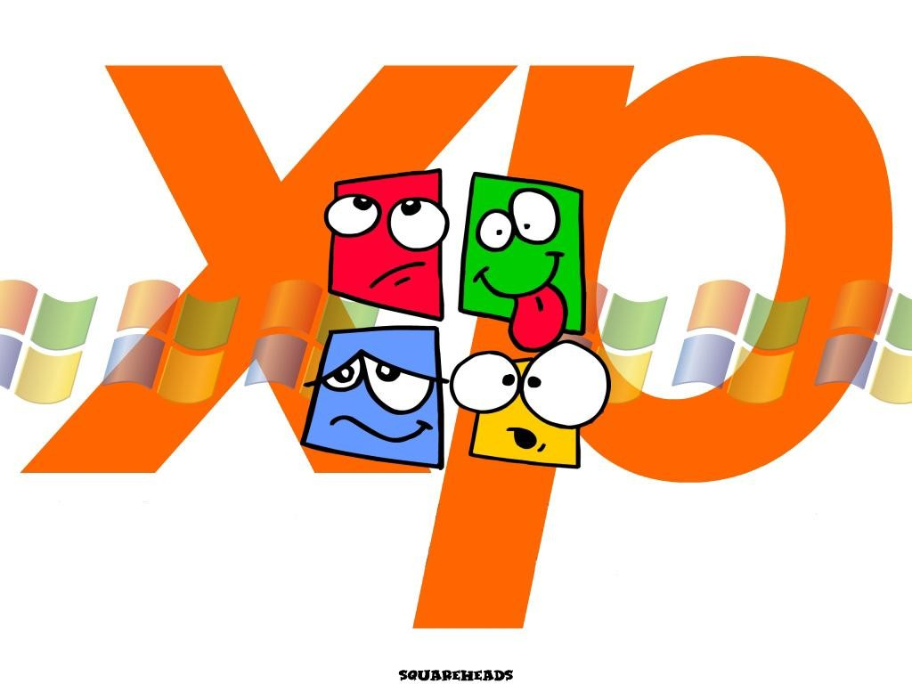

Возможно, у вас есть принтер,
подключенный к компьютеру, которые находится в другой комнате. Если дома имеется сеть, то на этот принтер можно отправить
задание печати
со своего компьютера.
Больше не нужно копировать файл на гибкий диск и нести его к другому компьютеру
Haвepx
Ссылка на сайт Moodle